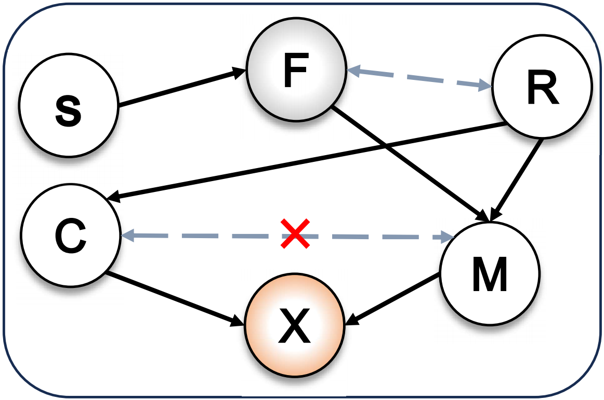
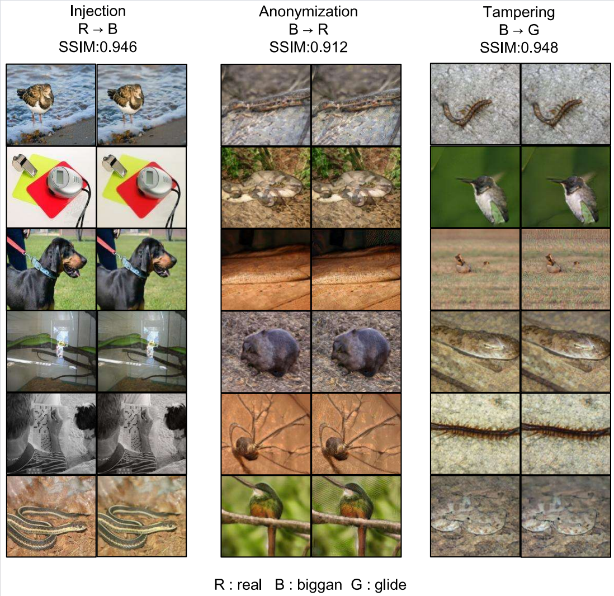
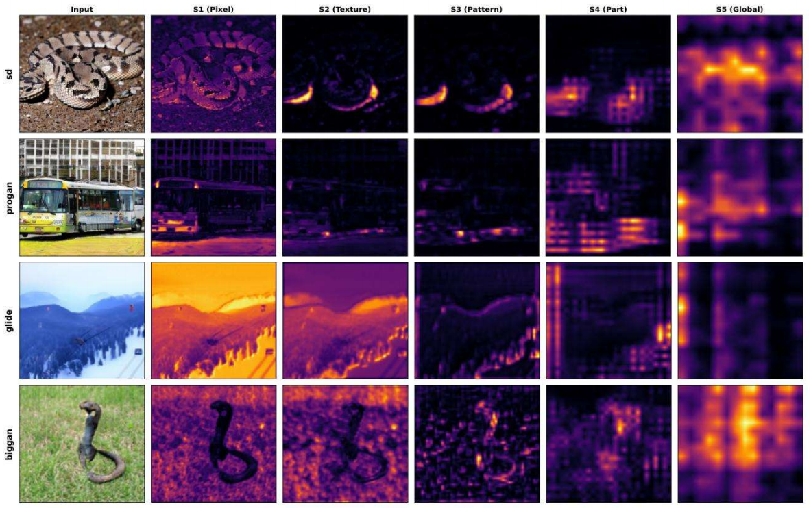
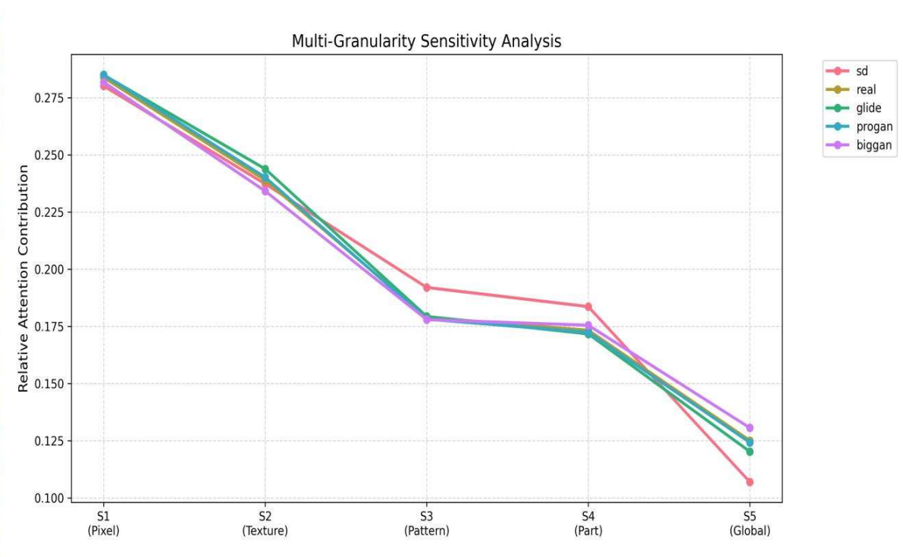

With the exponential growth of AI-generated content (AIGC) technology, the issues of copyright attribution and privacy protection for generated images have evolved into a dual crisis of trust that demands urgent resolution. Existing passive detection methods are limited to post-hoc forensics and struggle to proactively intervene in the identity of image generators. This paper proposes a fingerprint decoupling framework based on Structural Causal Models (SCM), which orthogonally decouples generated images into semantic content and causal fingerprints. Unlike traditional statistical features, causal fingerprints are formalized as independent structural variables of the generation mechanism, endowing them with inherent intervenability. Based on this, we construct a unified framework for counterfactual generative model intervention mechanisms: utilizing counterfactual intervention to achieve non-repudiable and robust copyright attribution through fingerprint injection; ensuring complete privacy protection of model identity through fingerprint anonymization; and verifying the operability of the generative mechanism while preserving content integrity via fingerprint tampering. Theoretical analysis rigorously proves the uniqueness and causal exclusivity of the fingerprints. Extensive experiments demonstrate that this method significantly improves the accuracy of copyright tracing and the effectiveness of de-anonymization while maintaining high image fidelity, opening up a new causal perspective for digital rights management in the AIGC era.

We propose Causal Fingerprints (CF), a novel framework that redefines generative fingerprints as intervenable causal variables within a structural causal model (SCM). By explicitly factorizing the generative process into semantic content and fingerprint-dependent mechanism components, our formulation enables disentangled representation learning where fingerprint features are independent of content.
Our approach addresses the fundamental limitations of existing methods that rely on statistical correlations. By redefining fingerprints as causal variables, we bridge the gap between passive attribution and active controllability. This framework naturally supports a unified set of operations across diverse application scenarios:
By integrating causal representation learning, counterfactual intervention, and generative modeling, Causal Fingerprints transform source attribution from a passive task into an active, interpretable, and causally grounded process.



@inproceedings{causality_fp_2026,
title={Causality of fingerprinting AI generative models},
author={Anonymous Authors},
booktitle={Under review at ACM Multimedia (ACM MM)},
year={2026}
}